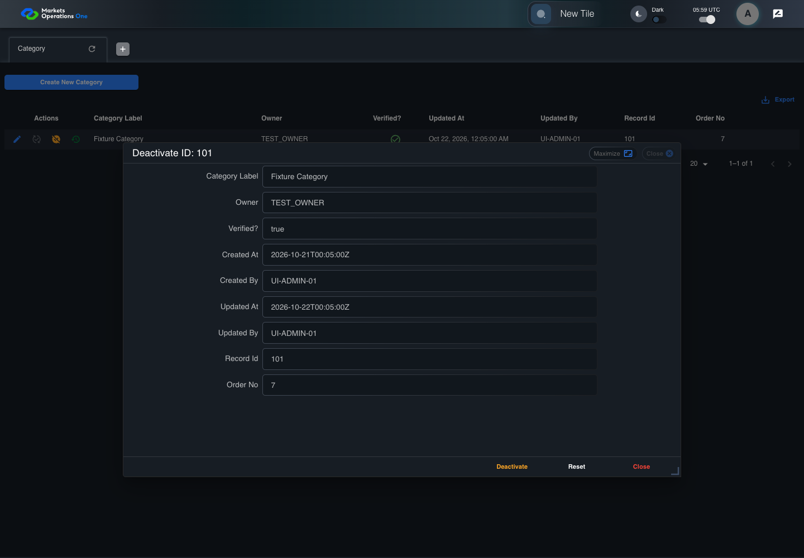

UI-ADM-CAT-010 actual administration UI with step evidence
PASS · application/run-050/ui-adm-cat-010-actual-administration-ui-with-step-evidence-dfed3208c9cc-attempt-1 · ACTUAL_APPLICATION_LOCAL_SERVICES
Actual current React administration screens. Controlled browser login supplies UI-ADMIN-01 and TEST_OWNER, or the declared SUPER_USER. Controlled BFF routes return the case-declared records. Other controlled saves persist submitted field values. This run establishes frontend handling only. It does not execute BFF validation, storage, audit generation, or authorization.
2026-10-22T05:59:09.461Z to 2026-10-22T05:59:12.442Z
Assertions and result · Artifact manifest · Exact run inputs and source hashes
Result SHA-256:ee1035645d804909be3e8bb39a654ef1f0e94307af893abe7339048467d1e8b6Machine observations
- ui-origin-admin-requests.json
76a428dbcabe053a3ca1251a42a5ba5ff8df4cbb3f0155b9fbcbc2dae47d1371
Screenshot capture: CAPTURED. Named frames: 8.
Step screenshot evidence: COMPLETE. 7/7 canonical steps have execution screenshots.
Canonical step timeline
Given Admin A is authenticated as fixture UI-ADMIN-01 with the case-specific permissions
Execution: PASSED.
1. step-01 Visible state after step 1: Given Admin A is authenticated as fixture UI-ADMIN-01 with the case-specific permissions
2026-10-22T05:59:10.530Z · 1440×1000
Step: /Users/lushevol/code/github/ratan-release-impact/workbench/tasks/ui-test-coverage-20261022/test-cases.md:7967
SHA-256:be85fc0eb4cfbd70a2159640a8789a93e8c37b2baceb6f51c245ede93eba2be5And the Category admin screen is open for UI-ADMIN-01; fixture record 101 is active and has Category Label Fixture Category; its owner is TEST_OWNER
Execution: PASSED.
2. step-02 Visible state after step 2: And the Category admin screen is open for UI-ADMIN-01; fixture record 101 is active and has Category Label Fixture Category; its owner is TEST_OWNER
2026-10-22T05:59:11.401Z · 1440×1000
Step: /Users/lushevol/code/github/ratan-release-impact/workbench/tasks/ui-test-coverage-20261022/test-cases.md:7968
SHA-256:4b4f5d83dae420573798ff1cbac0e0a4cb97a9e9f25147ae30260be5a933e76eWhen Admin A clicks icon button named "Deactivate" inside row with Record Id "101" in the "Category" administration data grid
Execution: PASSED.
3. step-03 Visible state after step 3: When Admin A clicks icon button named "Deactivate" inside row with Record Id "101" in the "Category" administration data grid
2026-10-22T05:59:11.639Z · 1440×1000
Step: /Users/lushevol/code/github/ratan-release-impact/workbench/tasks/ui-test-coverage-20261022/test-cases.md:7969
SHA-256:81d84f78e4f9ea4c43f201ed6c07e38ea1dad5129617c793bd42aff6c9868207Then textbox named "Category Label" inside the dialog named "deactivate ID: 101" inside the "Category" administration tabpanel is disabled
Execution: PASSED.
4. step-04 Visible state after step 4: Then textbox named "Category Label" inside the dialog named "deactivate ID: 101" inside the "Category" administration tabpanel is disabled
2026-10-22T05:59:11.728Z · 1440×1000
Step: /Users/lushevol/code/github/ratan-release-impact/workbench/tasks/ui-test-coverage-20261022/test-cases.md:7970
SHA-256:a82ba365576d963c8b0b9e43e7f8cd0c6b15a6c147eab296e09bcd92c0d2a071And button named "Deactivate" inside the dialog named "deactivate ID: 101" inside the "Category" administration tabpanel is visible
Execution: PASSED.
5. step-05 Visible state after step 5: And button named "Deactivate" inside the dialog named "deactivate ID: 101" inside the "Category" administration tabpanel is visible
2026-10-22T05:59:11.842Z · 1440×1000
Step: /Users/lushevol/code/github/ratan-release-impact/workbench/tasks/ui-test-coverage-20261022/test-cases.md:7971
SHA-256:a82ba365576d963c8b0b9e43e7f8cd0c6b15a6c147eab296e09bcd92c0d2a071And button named "Reset" inside the dialog named "deactivate ID: 101" inside the "Category" administration tabpanel is visible
Execution: PASSED.
6. step-06 Visible state after step 6: And button named "Reset" inside the dialog named "deactivate ID: 101" inside the "Category" administration tabpanel is visible
2026-10-22T05:59:11.911Z · 1440×1000
Step: /Users/lushevol/code/github/ratan-release-impact/workbench/tasks/ui-test-coverage-20261022/test-cases.md:7972
SHA-256:a82ba365576d963c8b0b9e43e7f8cd0c6b15a6c147eab296e09bcd92c0d2a071And button named "Close" inside the dialog named "deactivate ID: 101" inside the "Category" administration tabpanel is visible
Execution: PASSED.7. step-07 Visible state after step 7: And button named "Close" inside the dialog named "deactivate ID: 101" inside the "Category" administration tabpanel is visible
2026-10-22T05:59:11.997Z · 1440×1000
Step: /Users/lushevol/code/github/ratan-release-impact/workbench/tasks/ui-test-coverage-20261022/test-cases.md:7973
SHA-256:a82ba365576d963c8b0b9e43e7f8cd0c6b15a6c147eab296e09bcd92c0d2a071
Additional named frames

The final visible state after the named test assertions.
2026-10-22T05:59:12.121Z · 1440×1000Step: Test source: /Users/lushevol/code/github/ratan-release-impact/workbench/e2e/audit-specs/admin-expanded.spec.ts:15
SHA-256:
a82ba365576d963c8b0b9e43e7f8cd0c6b15a6c147eab296e09bcd92c0d2a071Screenshots establish visible state only. Assertions and traces support functional claims.